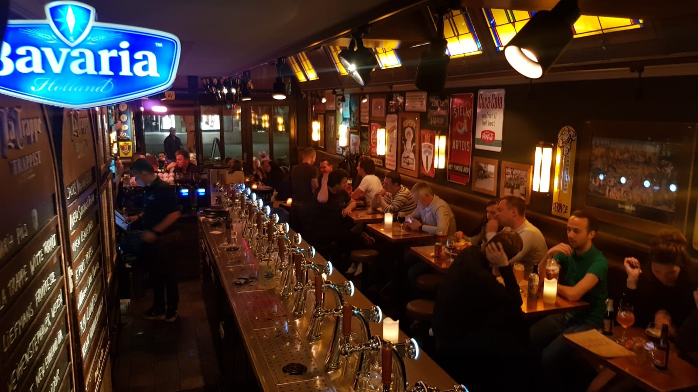
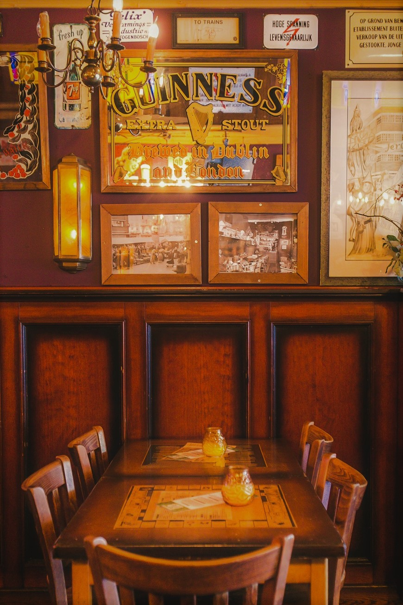
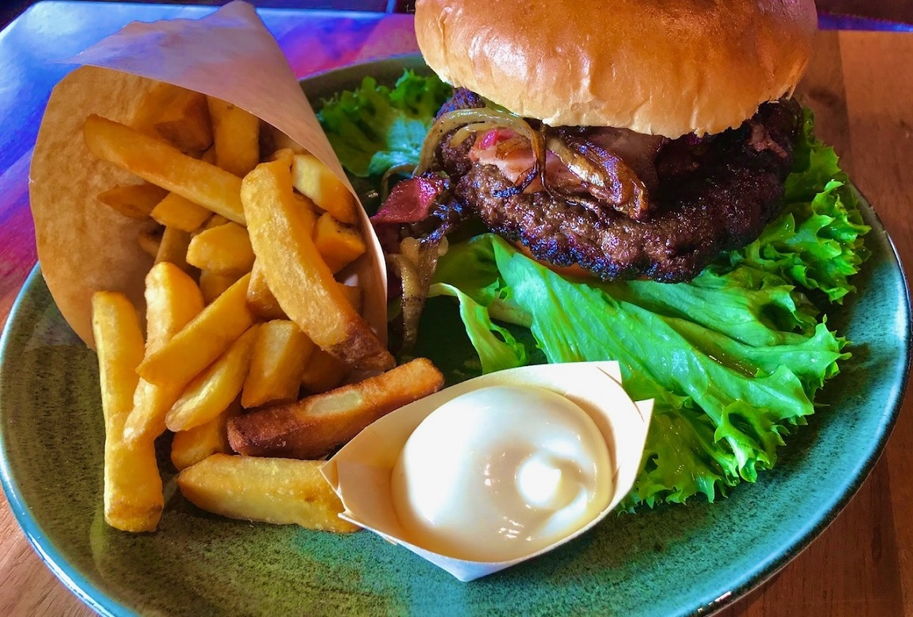
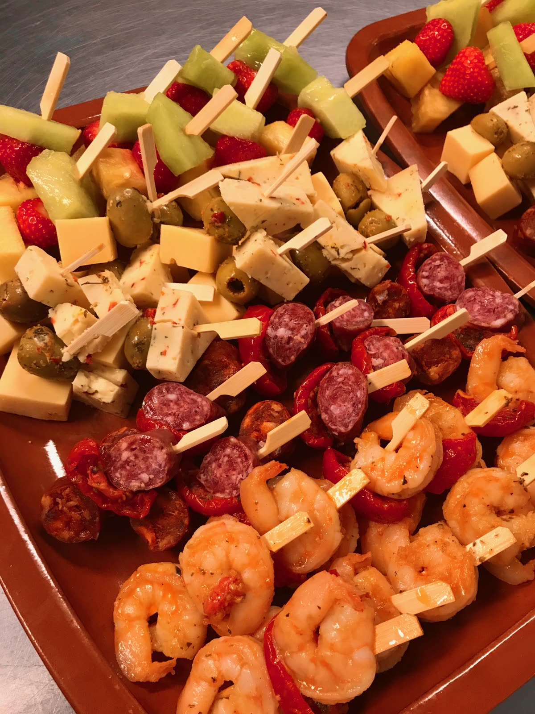
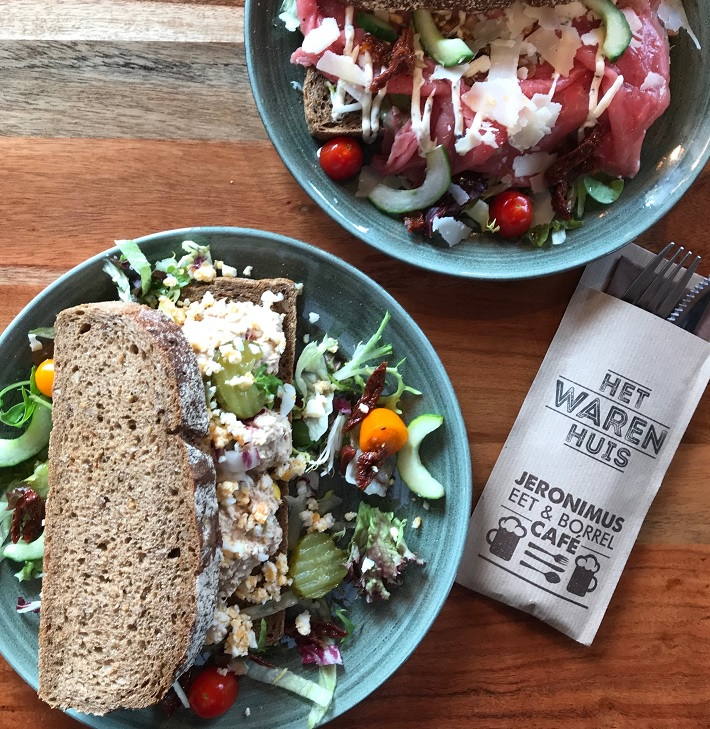
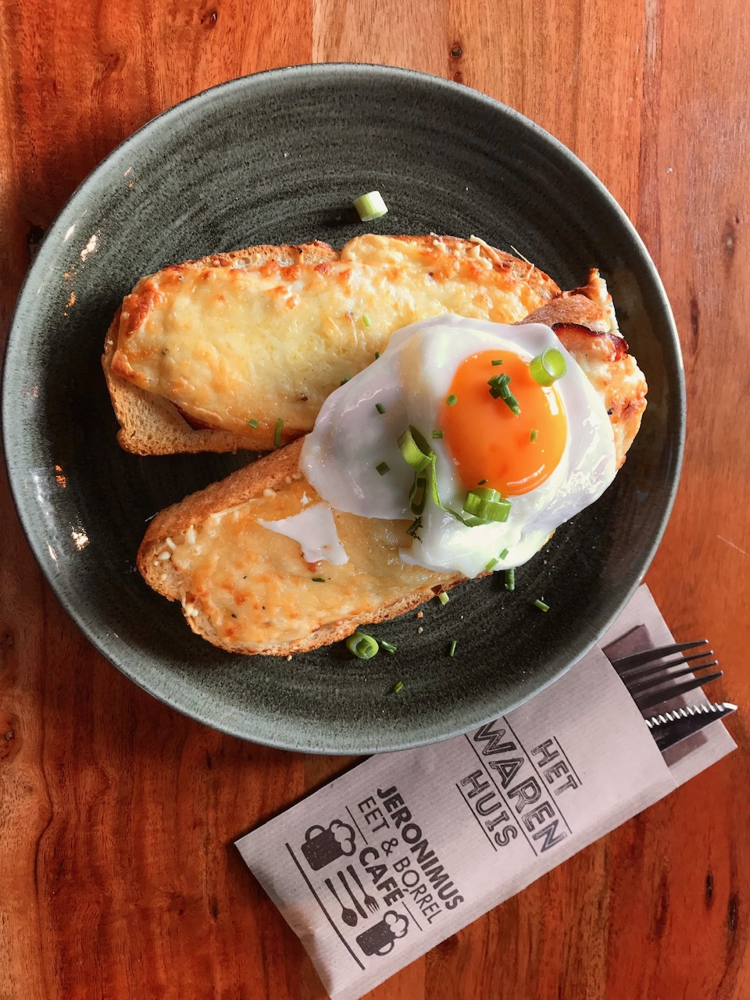
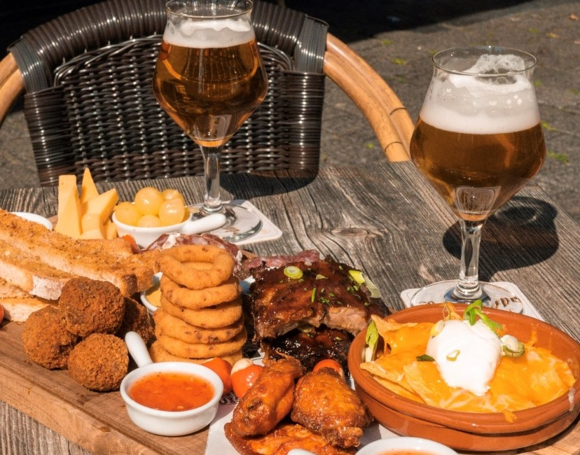
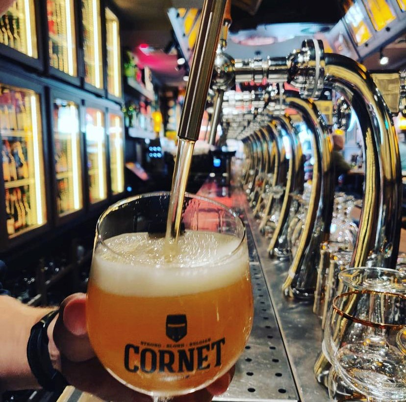
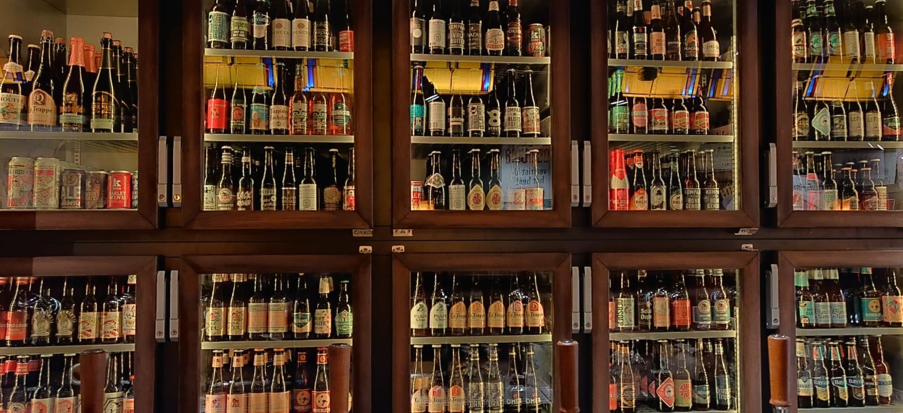
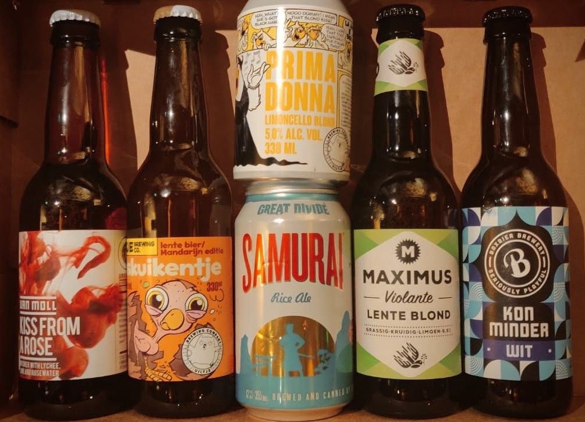

Pils
Ondergistend, vernoemd naar de Tsjechische stad Pilsen, waar deze manier van brouwen in 1842 ontstond.

Markt 8, tegenover het stadhuis
Je bent de hele dag welkom voor koffie met gebak, een royale lunch, een dikke borrelplank of gewoon een goed glas speciaalbier.
Elke dag open vanaf 09.00 uur

Aan de Bossche markt, in het hart van de stad en tegenover het stadhuis, staat Jeronimus Eet & Borrel Café.
Geopend in 1996 en vernoemd naar de bekende middeleeuwse schilder Jheronimus Bosch, is ons gezellige café niet meer weg te denken uit de Bourgondische binnenstad. Met een stoere, eigenwijze en warme inrichting is Jeronimus een sfeervolle plek om het Bourgondisch genieten tot echte levenskunst te verheffen.
Onze specialiteit is het verzamelen en schenken van bijzondere bieren, daar maken we graag werk van. Onze lunch- en dinergerechten, borrelhapjes en pubfood komen uit de keuken van stadsbrasserie Het Warenhuis, onze grote broer en naaste buur op de markt.
In de lente, zomer en herfst strekt ons terras zich uit voor beide zaken en ben je welkom op de zonnigste plek van de markt. In de winter zorgen we voor een behaaglijk, verwarmd winterterras.
Vanaf de vroege middag tot de late avond ben je welkom. Meer zin in een kop koffie met een Bossche bol of een puntje huisgebakken appeltaart? Ook dan ben je van harte welkom, binnen of op ons terras aan de Bossche markt.




We beginnen de dag met onze welbekende lunch: ruime porties en verse ingrediënten.
flinterdun gesneden ossenhaas, Parmezaan, pijnboompitjes, pesto of truffelmayonaise
gluten, lactose, mosterd, ei, noten, pinda
gemarineerde en gebakken kippendij, spekjes, Parmezaan, pestomayonaise, croutons
gluten, lactose, mosterd, ei
gerookte zalm, dillecrème, ei, kruidenolie
vis, lactose, ei
gegratineerde geitenkaas, quinoa, zongedroogde tomaatjes, honing, walnoten
gluten, lactose, mosterd, noten
het vertrouwde recept, brood en kruidenboter
gluten, lactose
steeds een andere vers bereide soep, vaak vegetarisch, brood en kruidenboter
informeer naar de allergenen
ham, kaas
gluten, lactose, mosterd
ham, kaas, spiegelei
gluten, lactose, mosterd, ei
croque monsieur zonder ham
gluten, lactose, mosterd
rustiek snijbrood, Parmezaan, pijnboompitjes, pesto of truffelmayonaise
gluten, lactose, mosterd, noten, pinda
rustiek snijbrood, dillecrème, ei, kruidenolie
gluten, lactose, ei, vis
rustiek snijbrood, paprika, komkommer, rode ui, eicrumble
gluten, lactose, mosterd, ei, vis
ons gekruid rundergehakt, paprika, ui, cheddar, tortillachips
gluten, lactose
romige brie, rustiek snijbrood, honing, noten
gluten, lactose, mosterd, noten, pinda
gegratineerde geitenkaas, rustiek snijbrood, honing, noten
gluten, lactose, mosterd, noten, pinda
spicy gebakken kipstukjes, chilisaus, paprika, ui, srirachamayonaise
gluten, mosterd, ei
twee rundvleeskroketten van kroketterij De Bourgondiër, met brood of frites
gluten, lactose, mosterd, ei, selderij
twee kroketten van Cas en Kas, met brood of frites
gluten, mosterd, ei, lupine
kippendijfilet, huisgemaakte satésaus, met brood of frites
gluten, noten, pinda, sesam
van vier eieren: naturel, kaas, ham of spek
gluten, lactose, ei
Italiaans luchtig brood, crispy bacon, ui, crème fraîche
gluten, lactose
Italiaans luchtig brood, gegrilde groenten, pesto, burrata, balsamicostroop
gluten, lactose
100% beefburger, brioche, gebakken ui, bacon, kaas, sla, tomaat, augurk, cajunmayonaise, frites
gluten, lactose, mosterd, ei
homemade crispy chicken, brioche, cajunmayonaise, coleslaw, sla, tomaat, frites
gluten, lactose, mosterd, ei
Kom in de middag langs voor een borrel. Kies een speciaalbier of een goed glas wijn en bestel er een lekkere borrelhap bij.

ambachtelijke Bourgondiër bitterballen, oude kaas, nacho’s met salsa en zure room, pittige fuet, garlic bread met knoflooksaus, spareribs, gefrituurde uienringen, spicy chicken wings met chilisaus
gluten, lactose, mosterd, ei, selderij
crispy knoflookgamba’s met aioli, oude kaas, pata negra, garlic bread met knoflookdip, gerookte zalm, Caramello-kaas, Bourgondiër bitterballen, gyoza
gluten, lactose, mosterd, ei, selderij, vis, schaaldieren, soja, sesam
5 verschillende kazen, kletzenbrood, appelstroop
gluten, lactose, noten
breekbrood, kruidenboter, pestomayonaise, srirachadip
gluten, mosterd, ei
7 luxe bitterballen van kroketterij De Bourgondiër, per stuk bij te bestellen
gluten, lactose, mosterd, ei, selderij
12 stuks
gluten, lactose, mosterd, ei, selderij
7 stuks, per stuk bij te bestellen
gluten, lactose, mosterd, ei, selderij
7 stuks, per stuk bij te bestellen
gluten, lactose, ei
12 stuks, mix van gefrituurde hapjes
gluten, lactose, mosterd, ei, selderij
5 stuks, gefrituurd, gevuld met kip of vegetarisch, hoisinsaus
gluten, soja, sesam
7 stuks, aioli, chilidip
gluten, lactose, ei, schaaldieren
homemade garlic bread, knoflooksaus
gluten, mosterd, ei
gegratineerde tortillachips, cheddar, verse salsa, zure room
lactose
onze nacho’s maar dan mét ons Jeronimus-gehakt, jalapeños
gluten, lactose
80 gram van de allerlekkerste Spaanse ibericoham, vers gesneden
geen allergenen
frites, Jeronimus-gehakt, cheddar, jalapeño, bosui
gluten, lactose
frites, truffelmayonaise, Parmezaanse kaas
gluten, lactose, ei
In de avond serveren we heerlijk pubfood van een kleine kaart.
39,50
Naast de à-la-cartekaart hebben we een steeds wisselend driegangen seizoensmenu, met bij elke gang keuze uit drie gerechten. Ook ideaal voor groepen. Vraag ons naar de gerechten van dit moment.
breekbrood, kruidenboter, pestomayonaise, srirachadip
gluten, mosterd, ei
crispy gamba’s, aioli, chilidip, zeven stuks
gluten, lactose, ei, schaaldieren
gevuld met kip of vegetarisch, gefrituurd, hoisinsaus, 5 stuks
gluten, soja, sesam
80 gram van de mooiste en lekkerste Spaanse ham, vers gesneden
geen allergenen
dun gesneden ossenhaas, Parmezaan, pijnboompitten, pesto of truffelmayonaise
lactose, mosterd, pinda, noten
pommes anna, tartaar van krab, zeewierkaviaar, chilimayonaise
vis, schaaldieren, ei
vijgen, walnoten, honing-mosterddressing, keuze uit Parmezaan of blauwe geitenkaas
lactose, mosterd, noten
een wisselend seizoensgebonden voorgerecht, afwisselend vlees, vis of vegetarisch
vraag naar de allergenen
herfstbouillon op basis van hert, beukenzwam, huisgemaakte crostini
gluten
met dungesneden ossenhaas, Parmezaan, pijnboompitten, pesto of truffelmayonaise
lactose, mosterd
met gemarineerde en gebakken kippendij, spekjes, pestomayonaise, Parmezaan, croutons
gluten, lactose, mosterd, ei, soja, noten
met gegratineerde geitenkaas, honing, quinoa, zongedroogde tomaatjes, walnoten
lactose, mosterd, noten
gerookte zalm, dillecrème, eicrumble, kruidenolie
lactose, ei, vis
met gebakken ossenhaaspuntjes in teriyaki, gegrilde groenten, rode ui
gluten, soja, sesam, mosterd
De salades serveren we als hoofdgerecht met naar keuze frites of brood en kruidenboter, maar je kunt ze ook als voorgerecht bestellen.
volgens ons vertrouwde recept, met kip
gluten, lactose
telkens een andere soep, meestal vegetarisch, vraag er gerust naar
vraag naar de allergenen
wortel, knolselderijpuree, cantharellen, rodewijnsaus
gluten, lactose
hert en wild zwijn, gegaard in rode wijn, seizoensgroenten
knoflook
runderlende, dichtgeschroeid, bierjus, geserveerd in een sizzling pan, gebakken paddenstoelen
gluten, soja, sesam
mals gebakken biefstukpuntjes, teriyaki, seizoensgroenten
gluten, sesam, soja, selderij
steeds een nieuwe vangst
wisselende allergenen
combinatie van scholfilet, kabeljauw en coquille, pompoencrème, zeekraal
lactose, schelpdieren
ravioli met een vulling van ricotta en spinazie, citroen-wittewijnsaus
gluten, lactose
gevuld met courgette, geroosterde hazelnoot, vijgen
lactose
100% beefburger, brioche, bacon, gebakken ui, kaas, sla, tomaat, augurk, frites
gluten, lactose, mosterd, ei
onze lekkere malse ribs, knoflookmayonaise, chilisaus, salade
gluten, soja, mosterd, ei
gemarineerde malse kippendijfilet, satésaus, atjar, kroepoek
gluten, pinda, noten, sesam, soja, schaaldieren
Al onze hoofdgerechten serveren we met friet.
Naast de frites die we standaard serveren, kun je deze gerechten extra bijbestellen.
gluten, ei
gluten, lactose, ei
Jeronimus-gehakt, cheddar, jalapeño, lente-ui
lactose
citroen-wittewijnsaus of rodewijnsaus
halve Bossche bol, bolletje vanille-ijs
gluten, lactose, ei, soja
lange vingers gedrenkt in espresso, mascarpone, speculaascrumble
gluten, lactose
crème fraîche, karamel
gluten, lactose
vanille-ijs, poedersuiker, slagroom
gluten, lactose
5 soorten kaas, kletzenbrood, frambozenchutney
gluten, lactose, noten, pinda
espresso martini, de perfecte after-dinner-cocktail
geen allergenen
Voor de kleinste gasten.
een klein kommetje soep
gluten, lactose, mosterd, noten
twee minibroodjes met krokante kip
gluten, melk, sesam, soja
twee minibroodjes met bitterballen
gluten, lactose, mosterd, ei, selderij, soja
boterham met Nutella, hagelslag, ham of kaas
informeer naar de allergenen
kleine kom huisgemaakte tomatensoep
gluten, lactose
twee kleine broodjes met crispy chicken, frites
gluten, lactose, sesam, soja
twee kleine broodjes met bitterbal, frites
gluten, lactose, mosterd, ei, selderij, soja
frikandel, frites
gluten
vanille-ijs, discodip, slagroom
lactose
Onder elk gerecht staan de allergenen. Twijfel je? Vraag het ons gerust.
Ons personeel kan je over ieder biertje dat je bestelt wel iets vertellen. Dat maakt het nog leuker om onze nieuwe bieren te proeven.

Ondergistend, vernoemd naar de Tsjechische stad Pilsen, waar deze manier van brouwen in 1842 ontstond.
Bovengistend, goudblond soepel bier met een hoger alcoholpercentage dan pils. Allemansvrienden.
Bieren die van oudsher extra gehopt werden voor een langere houdbaarheid. Frisbittere bieren.
Bovengistend, meestal blond, zwaar bier, gebrouwen met ongeveer drie keer zoveel mout en met hergisting op de fles.
Deze kleur ontstaat door een deel gekaramelliseerde mout.
Bovengistend. Dubbel wordt gebrouwen met de dubbele hoeveelheid mout, quadrupel bevat nóg meer granen.
Bovengistend, deels met tarwe gebrouwen, meestal ongefilterd en dus troebel. Zacht en fris.
Bovengistende bieren, uitsluitend gebrouwen door monniken van de orde der cisterciënzers binnen hun klooster. Niet te verwarren met abdijbieren, die veel commerciëler zijn. Er zijn op de wereld slechts elf trappistenbrouwerijen.
Naast onze vaste bieren schenken we tijdelijk bieren van een bepaalde biersoort of seizoen. Vraag naar onze steeds wisselende losse speciaalbierkaart.
Bekijk ons op Untappd
Jeronimus is een bruine kroeg met een stoere maar gezellige sfeer, de juiste plek voor een borrel met vrienden of collega’s. Met een kleine groep ben je altijd welkom aan onze bar of aan een van de stamtafels. Bestel lekker waar je zin in hebt en blijf zo lang je wilt.
Plannen voor een borrel met een grotere groep? Neem dan even contact met ons op. Jeronimus biedt plaats aan 80 tot 90 personen en we doen je graag een voorstel zodra we je wensen kennen.

Liefhebber van speciaalbier en op zoek naar een (bij)baan? We zoeken medewerkers voor de bediening en bierkenners.
Je werkt bij Jeronimus in nauwe samenwerking met Het Warenhuis: we delen keuken en terras. Iedereen is welkom, met of zonder ervaring, voor een bijbaan of fulltime. Loop binnen bij Jeronimus of Het Warenhuis, mail naar info@jeronimus-cafe.nl of bel 073 689 71 90.
Markt 8
5211 JX ’s-Hertogenbosch
073 612 87 65
Geen gehoor? Bel Het Warenhuis: 073 689 71 90